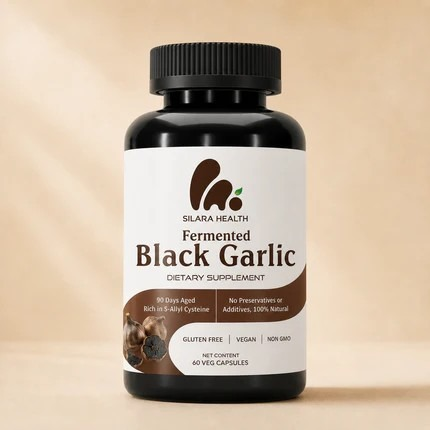

The Silent Change Inside Your Arteries After 50 That's Driving Your Blood Pressure Up — From a Cardiologist Who's Spent 30 Years Studying It
Your blood pressure didn't start creeping up by accident. There's a specific, age-related change happening inside your arteries — and a compound, backed by real clinical research, that most people (and most doctors) have never heard of.
Let me describe what your last few check-ups have probably felt like.
The nurse wraps the cuff around your arm. The machine inflates. And then there's that small pause before the number appears — the one where, lately, you catch yourself holding your breath.
Because the number keeps climbing. A point or two every year. You've cut back on salt. You walk. You are not a careless person. And still, at every visit, your doctor's eyebrows lift a little higher — until the day they finally say the sentence you've been dreading: "We may need to start you on something."
Here is what almost no one says out loud in that room: that rising number is not random, it is not simply "getting older," and it is not always something you are powerless to change.
I've spent thirty years as a cardiologist with my hands on this exact problem. And I'm going to tell you something the pharmaceutical industry has no financial reason to ever tell you — because there is no patent on it, no sales rep promoting it, and no profit in it for anyone.
There is a specific change happening inside the walls of your arteries as you age. It has a name. The research behind it is real and published. And once you understand it, the slow climb of that number stops looking like fate — and starts looking like something you can finally do something about.
Your Blood Pressure Isn't the Problem. It's the Symptom.
Here's the first thing I need you to understand, because it changes everything that follows:
Your blood pressure is not the disease. It's the smoke. And for thirty years, you've been taught to stare at the smoke while the fire burns one layer deeper.
That fire is happening in a part of your body almost no doctor will ever name for you: the endothelium — a single, paper-thin layer of cells lining the inside of every artery you have. Sixty thousand miles of them.
When you were young, those cells did one critical job around the clock: they produced nitric oxide, the molecule that tells your arteries to relax and open so blood can flow freely.
And here is what no one warns you about. Starting in your forties — and accelerating every single year after — your body's ability to produce nitric oxide begins to collapse.
Picture a garden hose. New, it's soft; squeeze it and it gives. Leave it out in the sun for years and it turns stiff, narrow, brittle. That is what is happening inside your arteries right now, silently, as you read this. Less nitric oxide means stiffer vessels. Stiffer vessels mean your heart has to shove blood through them with more and more force.
That force, driven against those narrowing walls, is the number creeping up on the cuff.
The pill your doctor reaches for can press that number back down — and it does its job on the number. But be clear about what it is and isn't doing: it manages the readout. It was never built to touch the thing underneath.
And that failure does not pause politely while you make up your mind. Every year you wait, your arteries produce a little less of the one molecule they cannot function without.
The Next Ten Years Don't Have to Go the Way You're Afraid They Will
Now picture the other road. Not a fantasy — just the version no one bothered to show you.
Picture walking into your next check-up without the knot in your stomach. The cuff inflates, the number comes up, and for once you're not bracing for it.
Picture being the one chasing the grandkids around the yard — not the one waving from the chair on the porch because somewhere along the way your body decided the porch is where you belong now.
Picture not standing at a pharmacy counter, watching one pill quietly become two, become three.
Here's what makes that road real: the slow decline in your arteries is not a one-way door. The endothelium responds to what you give it. Support its ability to produce nitric oxide, and the research shows the system can do more of the job it was built to do.
But I won't soften this part: there is a window. The best time to support your arteries was twenty years ago. The second best time is right now — before that number climbs any higher.
There Is One Compound That Targets the System Itself — and Most Doctors Have Never Read the Research
So if the problem is your collapsing nitric oxide, the obvious question is the one my patients always ask next: can you actually do anything to support it?
For most of my career, the honest answer I gave was "not much, beyond diet and exercise." Then I went deep into a body of research I'd spent years ignoring — and I changed my mind.
There is a compound. It's called S-allyl cysteine — SAC for short. And unlike nearly everything else sold for "heart health," it doesn't just sit in your stomach and dissolve into nothing. It speaks directly to the nitric oxide system we've been talking about. Here's how:
And this is not a theory I'm spinning to sell you something. Some of the most rigorous work comes from Dr. Karin Ried and her team at Australia's National Institute of Integrative Medicine, whose randomized controlled trials have been published in peer-reviewed journals for over a decade. When I want to know what actually supports healthy circulation, that's the research I turn to — not a supplement company's marketing.
Now — yes, SAC is found in garlic. But before you tell yourself "I've tried garlic, it did nothing for me" — hold that thought. Because which garlic, and in what form, changes absolutely everything.
What I Demand Before I'll Put My Name on Anything — and the One Product That Clears It

Let me be blunt, because it matters more than any marketing claim you'll ever read: most of the garlic and "circulation" supplements on that shelf are, plainly, worthless for this purpose. Not because the idea is wrong — but because of how they're made, and what they refuse to tell you.
Here's the bar I set before I'll recommend anything. Hold every product you've ever bought against it:
I'll be honest: almost nothing passes all three. The one I now point patients toward — the one that clears every standard — is a fermented black garlic called Silara.
It's standardized to deliver 1.2 milligrams of SAC in a single daily capsule — the range that shows up in the serious research — verified by HPLC, with a certificate of analysis from the actual batch in the bottle. No guesswork. No "just trust us." No hiding the number behind a proprietary blend.
One capsule, once a day. The compound your arteries have been missing, in the form they can actually use, at a dose someone can actually prove.
"But I Already Tried Garlic and It Did Nothing" — Here's Exactly Why
Now, back to the thought I asked you to hold. Maybe you're thinking: "I've tried garlic. I took the pills, ate the cloves, choked down the powder. It did nothing — except make me reek and give me heartburn."
I believe you. And here's the part that should make you a little angry: that wasn't garlic failing you. That was the wrong form of garlic — and almost certainly a dose no one ever bothered to measure.
Raw garlic, garlic powder, and the cheap capsules filling most shelves don't contain meaningful SAC. They contain its fragile cousin, allicin — so unstable it starts falling apart the moment it meets heat, oxygen, or stomach acid. By the time it reaches your bloodstream, most of it is gone.
And that smell? The burn? The 2 a.m. reflux? Those were never signs the garlic was "working." They were the symptoms of raw, unstable allicin — the exact thing that never makes it to your arteries.
Stable SAC only forms when garlic is slowly aged and fermented — the dark, patient process behind black garlic. Same plant. Completely different molecule. Completely different result.
So no — you didn't fail at this. You were sold the broken version, and left to blame yourself. That ends here.
Why No One in a White Coat Has Ever Told You This
By now a fair question is forming: "If this compound is real, if the research is published — why has my own doctor never said a single word about it?"
I'll answer honestly, even though it doesn't flatter my own profession. It isn't because your doctor is hiding it. Most physicians are good people working brutal hours, genuinely trying to help. The problem isn't the doctor. It's the machine they were trained inside.
In four years of medical school, I spent more time memorizing the names of obscure bones than I ever spent on nutrition or how a compound actually gets absorbed. We were trained to do two things: name the disease, and reach for the drug that manages it. That's the model.
And here's the part that should make you angry. There is no patent on a compound found in garlic. No sales rep buys a cardiologist lunch to talk about it. No company spends a billion dollars advertising something they can't own. So it simply never enters the room — not because it doesn't work, but because nobody in the system makes a dollar when it does.
A pill that manages your number for the rest of your life is a customer for life. A natural compound that helps support the system underneath is a threat to that arrangement. You were never told, because in the system that trained your doctor, there was never anyone with a reason to tell you.
What to Honestly Expect in Your First Few Months — and What Not To
Let me set your expectations the way I'd set them for a patient sitting across from me — honestly. Because anyone promising you an overnight miracle is lying to you, and you've been lied to enough.
This is not a painkiller. You will not feel a switch flip on day one. You're supporting a system that took years to decline, and that works the way the research says: through consistent daily intake over time.
The first week or two. Most people notice what isn't there. No garlic breath. No aftertaste. No 2 a.m. reflux. If you quit every other supplement because of exactly those things, this is the difference between a bottle you finish and a bottle that dies in a drawer.
Weeks three and four. This is when patients tell me it's become automatic — one capsule with breakfast, no thought required. The nagging feeling of doing nothing gets replaced by the steadiness of finally doing something, every day, grounded in real science.
Around the twelve-week mark. The serious research on this compound is built around roughly twelve weeks of consistent daily intake. Consistency is the entire strategy.
So if you want brutal honesty: this rewards the patient and punishes the impulsive. The only people it truly doesn't work for are the ones who quit.
You Don't Have to Take My Word for It. Take Theirs.
I'm a cardiologist. I'm trained to distrust anecdotes — one person's story is not evidence. But there's a difference between an anecdote and a pattern. Here's a sample, in their own words:

"I've tried other garlic supplements before but gave up. With Silara, I actually stuck with it, and my doctor finally noticed the difference at my last visit."

"No odor, no reflux, just an easy morning routine. My wife started taking it too after seeing my results."

"The fact that it has an HPLC certification and comes in a glass jar sold me. I trust the quality, knowing it's doctor-backed."
Notice what almost none of them mention: gritting their teeth through a smell, or quitting after a week. That's the pattern. Not a miracle — just a supplement people actually stay on long enough for it to matter.
How to Start — and Why the Risk Is Entirely Theirs, Not Yours
Silara isn't on Amazon, in a pharmacy, or on a drugstore shelf. The company ships it directly to you — the only way to control quality from batch to door, and to keep it at a price that isn't insulting.
And they've taken the risk off your side of the table entirely. Every bottle is backed by a 60-day, money-back guarantee. Take it daily for two months. If you don't believe it's worth continuing — for any reason — you get every cent back.
And one thing I'll say as a cardiologist, not a salesman: if you're on blood pressure medication, keep taking it, and talk to your own doctor before you change anything. Silara is here to support the system underneath — not to replace the care you're already under. Anyone who tells you to throw away your prescriptions is not on your side.
If you do nothing
You close this page and nothing changes. The number keeps its slow climb. A year from now you're back in that chair, bracing for the cuff — with even less of that nitric oxide system left to work with.
If you try the right form
You give your arteries the one compound they've been missing, at zero financial risk. Worst case, you get your money back. Best case, the next ten years go very differently.
You understand it now. The rest is just whether you act on it.
WARNING: Due to unexpected demand from this article, inventory is extremely limited.